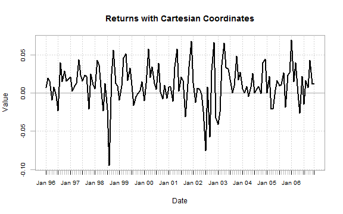
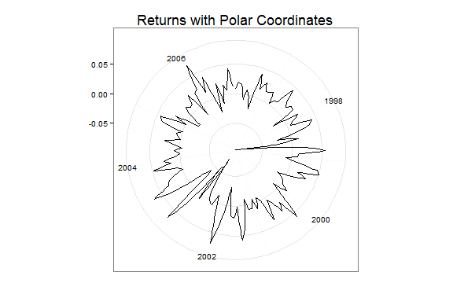

Cartesian and Polar Systems - micropolar linePlot
Cartesian System
Typically with finance time series, we plot with a Cartesian system like this.
require(rCharts)
require(PerformanceAnalytics)
#use the built in managers dataset from PerformanceAnalytics
data(managers)
chart.TimeSeries(
managers[,1],
main = "Returns with Cartesian Coordinates"
)

If we were to use rCharts with d3js, Cartesian still generally prevails as demonstrated by this simple dimplejs plot of the same returns from above.
managers.df <- data.frame(
index(managers),
managers[,1]
)
colnames(managers.df) <- c( "date", "HAM1" )
managers.df$date <- format(managers.df$date, "%Y-%m-%d")
dP <- dPlot(
HAM1 ~ date,
data = managers.df,
type = "line",
height = 400,
width = 600
)
dP$xAxis(
type = "addTimeAxis",
inputFormat = "%Y-%m-%d",
outputFormat = "%b %Y"
)
dP$yAxis(
outputFormat = '.2%'
)
dP
Polar System
However, we do have another option in Polar Coordinates. ggplot2 offers easy access to Polar Coordiantes with coord_polar. Here is a simple example.
require(ggplot2)
autoplot(managers[,1]) + coord_polar() +
theme_bw() + theme( plot.title = element_text(size = rel(1.5))) +
labs( title = "Returns with Polar Coordinates" ) + xlab( NULL ) + ylab (NULL)

Until yesterday, getting an interactive d3js version required an inordinate amount of work. Now we have micropolar from Chris Viau. rCharts author Ramnath Vaidyanathan quickly made micropolar accessible as detailed here. Let's see how we can use it with our return data.
make_dataset = function(x, y, data = data){
require(rCharts)
lapply(toJSONArray2(data[c(x, y)], json = F, names = F), unlist)
}
retData <- data.frame(
# 0 to nrow scaled to 360 since 360 deg in circle
1:(NROW(managers)),#-1),# * 360/NROW(managers),
# make numeric javascript date
as.numeric(as.POSIXct(index(managers[,1])))*1000,
format(index(managers),"%b %Y"),
managers[,1],
stringsAsFactors=FALSE
)
colnames(retData) <- c('x','date','month','y')
#retData$jsdate=lapply(retData$date,function(x){return(paste0("#!new Date(",x,")!#"))})
retLine <- rCharts$new()
retLine$setLib(
'http://timelyportfolio.github.io/howitworks/libraries/widgets/micropolar'
)
retLine$set(
data = make_dataset( x = "x", y= "y", data = retData),
type = "linePlot",
originTheta = 0,
radialAxisTheta = 0,
angularDomain = #as.character(round(retData$x,2)),#retData$date[c(1,NROW(retData))],
paste0(
"#!d3.time.format('%b %Y')(new Date(",
retData$date[c(seq(1,NROW(retData),6),NROW(retData))],
"))!#"),
hideFirstTick = FALSE,
angularTicksSuffix = '',
tickOrientation = "horizontal",
minorTicks = 5,
flip = TRUE,
height = 400,
width = 400
)
retLine
Polar coordinates do have good and interesting use cases, but they are not always good as evidenced by the often maligned pie chart. Whether good or bad, I will leave to the reader. It is nice though to have the option.
Thanks Ramnath Vaidyanathan and Chris Viau.